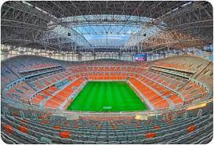

Neymar da Silva Santos Júnior
Neymar da Silva Santos Júnior atau yang biasa dikenal dengan Neymar Jr, merupakan pesepak bola yang lahir di Brasil pada 5 Februari 1992. Namanya tak asing bagi pencinta sepakbola Neymar merupakan anak dari Neymar Da Silva Santos dan Nadine Santos. Darah sepakbola mengalir dari sang ayah yang diketahui merupakan mantan atlit sepakbola
Article
